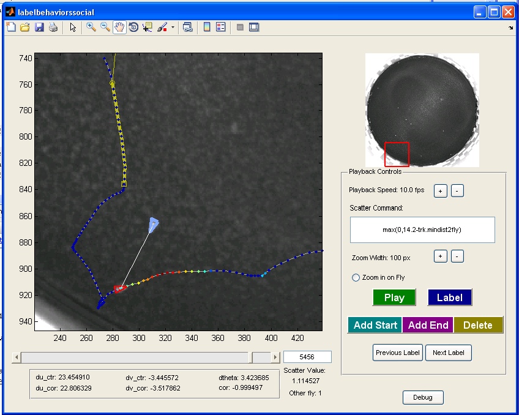

BehavioralMicroarray Matlab Toolbox
The BehavioralMicroarray Toolbox for Matlab contains a number of functions for analyzing the behaviors of the walking flies whose trajectories are computed using Ctrax. The toolbox includes code for computing per-frame statistics such as speed, distance to closest fly, etc., code for learning behavior classifications, code for detecting learned behaviors in the trajectories, code for histogramming various statistics of behavior, and code for analyzing and comparing the distributions of behavioral statistics for different types of flies. The analyses possible are similar to those performed in our paper, "High-Throughput Ethomics in Large Groups of Drosophila".
Contents
- showtrx.m
- simple_diagnostics.m
- make_ctrax_result_movie.m
- load_tracks.m
- convert_units.m
- compute_perframe_stats.m
- compute_perframe_stats_social.m
- classify_by_area.m
- learn_params.m
- learn_params_social.m
- detect_behaviors.m
- histogramproperties.m
- plot_behaviormicroarray.m
showtrx.m
{kind=link}
This script allows you to view a movie annotated with the trajectories computed by Ctrax. First, input the movie and corresponding trajectory MAT-file. This movie is shown in the main window of the GUI that is started. You can scroll to different frames or play the movie. You can select any number of flies and play the movie keeping the axes zoomed on these flies only. Per-frame properties of the last-clicked fly are also shown in the "Selected Flies" panel. More per-frame statistics can be computed by clicking the "Compute Per-Frame Stats" button, which calls the compute_perframe_stats.m script.
simple_diagnostics.m
This script inputs the trajectories of flies in a video and outputs a few simple visualizations of the data. In figure 1, it plots the (x,y) position of each fly in a separate subplot. In figure 2, it plots a histogram of the position in the arena of all flies (frequency in the left subplot, log frequency in the right subplot). In figure 3, it plots a histogram of the speed of all the flies in black as well as each fly individually in color. In figure 4, it plots a histogram of the angular speed (change in orientation) of all the flies in black as well as each fly individually in color.
{kind=link}
make_ctrax_result_movie.m

This function makes an AVI out of the raw video of the flies in the arena and the trajectories returned by Ctrax/FixErrors like those shown in Arena and Video Requirements. You will be prompted for the raw video to input, the name of the MAT-file containing the trajectories, and the name of the AVI file to output the annotated movie to. You can then set which frames to output (first frame and number of frames to output), the video frames per second, the compressor (Windows only), and the number and size of the zoomed-in fly boxes to show in the right panel of the movie. Uncompressed videos exported by this function can easily be compressed by any of the programs listed under Ctrax: File->Export as AVI.
load_tracks.m
Usage: [trx,matname,succeeded] = load_tracks
This function loads the trajectories output to a MAT-file by Ctrax into the easier-to-use structure trx. The trx structure is the representation of the trajectories used throughout this toolbox. It prompts you for a MAT-file containing trajectories -- this can either be a MAT-file output by Ctrax or any .mat file containing the trx variable: the output of load_tracks.m, convert_units.m, compute_perframe_stats.m, compute_perframe_stats_social.m, classify_by_area.m. If the input MAT-file is the raw output from Ctrax, the function stores trx to the auto-created file defined by the returned value matname. The returned value succeeded reflects whether trajectories were successfully loaded or not. trx is an array of structs with an element for each fly (i.e., length(trx) is the number of flies). trx(fly) has the following member variables.
- firstframe is the frame that the trajectory begins on.
- endframe is the frame that the trajectory ends on.
- nframes (= endframe - firstframe + 1) is the length of the trajectory in frames.
- x is a nframes x 1 array containing the x-position of the fly (in pixels) in each frame. Thus, trx(fly).x(i) is the x-position of fly in the ith frame of fly's trajectory (frame trx(fly).firstframe + i - 1).
- y is the nframes x 1 array of the y-position of fly in each frame (pixels),
- theta is the nframes x 1 array of the orientation of fly in each frame (radians),
- a is the nframes x 1 array of the quarter-major axis length of fly in each frame (pixels).
- b is the nframes x 1 array of the quarter-minor axis length of fly in each frame (pixels).
- timestamps is the nframes x 1 array of the timestamps associated with each frame (if saved, always saved in Ctrax >= 0.2.0.1)
convert_units.m
This script allows you to convert from the video units of pixels and frames to the real units of millimeters and seconds.
- Select a MAT-file containing the flies' trajectories to convert.
- Set the number of frames per second.
- Set the conversion from pixels to millimeters manually or compute this conversion by entering the known distance in millimeters between two landmark points.
- In the "Compute" option, you will first select the movie file corresponding to the trajectories. The first frame of this movie is then read in and displayed.
- Draw a line between two landmark points.
- Set the length of this line in millimeters.
- Select a MAT-file to save the results to.
The resulting trx structure (see load_tracks.m) is augmented with the following member variables:
- x_mm is the 1 x nframes array of x-position in millimeters.
- y_mm is the 1 x nframes array of y-position in millimeters.
- a_mm is the 1 x nframes array of quarter-major axis length in millimeters.
- b_mm is the 1 x nframes array of quarter-minor axis length in millimeters.
- pxpermm is the number of pixels per millimeter.
- fps is the number of frames per second.
compute_perframe_stats.m
This script inputs the trajectories of flies in a video and outputs a number of per-frame properties of interest. These include per-frame speed and acceleration properties such as velocity, angular velocity, forward and sideways velocity, velocity direction, change in velocity direction, velocity of the nose and tail of the fly, center of rotation, speed of center of rotation, and acceleration. In addition, there is the option to compute arena-based properties for circular arenas, such as distance to wall, orientation relative to the wall, and change in distance to the wall. Finally, there is the option to compute per-frame properties involving other flies, such as distance to the closest fly (center-center, nose-ellipse), maximum angle of the fly's vision subtended by another fly, velocity toward the closest fly, orientation and velocity direction relative to closest fly, and change in any of these properties. More specifically, the following per-frame properties are always computed. All of these fields are appended to the trx structure.
Basic parameters:
- dtheta: angular velocity (rad/s) [1 x (nframes - 1)].
- absdtheta: angular speed (rad/s) (|dtheta|) [1 x (nframes - 1)].
- signdtheta: boolean expressing whether change in orientation is positive or negative (no units) [1 x (nframes - 1)].
- d2theta: angular acceleration (rad/s^2) [1 x (nframes - 1)]. Note that d2theta(1) is always set to 0, and d2theta(t) is the acceleration computed from the angular velocities in frames t and t + 1.
- absd2theta: absolute angular acceleration (|d2theta|) (rad/s^2) [1 x (nframes - 1)].
- smooththeta: orientation, smoothed with the filter [1,4,6,4,1]/16 (rad) [1 x nframes].
- smoothdtheta: angular velocity, computed from the smoothed orientation (rad/s) [1 x (nframes - 1)].
- abssmoothdtheta: angular speed, computed from the smoothed orientation (rad/s) [1 x (nframes - 1)].
- smoothd2theta: angular acceleration, computed from the smoothed orientation (rad/s^2) [1 x (nframes - 1)]. Note that smoothd2theta(1) is always set to 0, and d2theta(t) is the acceleration computed from the angular velocities in frames t and t + 1.
- abssmoothd2theta: absolute angular acceleration, computed from the smoothed orientation (|smoothd2theta|) (rad/s^2) [1 x (nframes - 1)].
- velmag_ctr: speed (mm/s) [1 x (nframes - 1)].
- du_ctr: forward velocity of the fly's center (mm/s) [1 x (nframes - 1)]. This is the projection of the fly's velocity on its orientation direction.
- dv_ctr: sideways velocity of the fly's center (mm/s) [1 x (nframes - 1)]. This is the projection of the fly's velocity on the direction orthogonal to the orientation. Right is positive, left is negative.
- corfrac_maj: projection of the center of rotation on the fly's major axis (no units) [1 x (nframes - 1)]. This is a measure of the point on the fly that translates least from one frame to the next. It is 0 at the center of the fly, 1 at the forward tip of the major axis, and -1 and the backward tip of the major axis.
- corfrac_min: projection of the center of rotation on the fly's minor axis (no units) [1 x (nframes - 1)]. This is a measure of the point on the fly that translates least from one frame to the next. It is 0 at the center of the fly, 1 at the right tip of the minor axis, and -1 and the backward tip of the minor axis.
- abscorfrac_min: absolute value of corfrac_min (no units) [1 x (nframes - 1)].
- velmag: speed of the center of rotation (defined by corfrac_maj and corfrac_min) (mm/s) [1 x (nframes - 1)].
- corisonfly: boolean expressing whether any point on the fly does not move (no units) [1 x (nframes - 1)].
- du_cor: forward velocity of the fly's center of rotation (defined by corfrac_maj and corfrac_min) (mm/s) [1 x (nframes - 1)]. This is the projection of the change in the position of the center of rotation on the fly onto the fly's orientation direction.
- dv_cor: sideways velocity of the fly's center of rotation (defined by corfrac_maj and corfrac_min) (mm/s) [1 x (nframes - 1)]. This is the projection of the change in the position of the center of rotation on the fly onto the direction orthogonal to the fly's orientation.
- absdv_cor: sideways speed of the fly's center of rotation (|dv_cor|) (mm/s) [1 x (nframes - 1)].
- flipdv_cor: sideways velocity of the fly's center of rotation, sign-normalized so that if the fly's orientation is turning right, then flipdv_cor is positive if the fly's center of rotation is also translating to the right (dv_cor * signdtheta) (mm/s) [1 x (nframes - 1)].
- accmag: acceleration of the center of rotation (defined by corfrac_maj and corfrac_min) (mm/s^2) [1 x (nframes - 1)]. Note that accmag(1) is always set to 0, and accmag(t) is the acceleration computed from the velocities in frames t and t + 1.
- phi: velocity direction (rad) [1 x nframes].
- yaw: difference between velocity direction and orientation (rad) [1 x nframes].
- absyaw: absolute difference between velocity direction and orientation (rad) [1 x nframes].
- du_tail: forward velocity of the backmost point on the fly (mm/s) [1 x (nframes - 1)]. This is the projection of the fly's velocity on its orientation direction.
- dv_tail: sideways velocity of the backmost point on the fly (mm/s) [1 x (nframes - 1)]. This is the projection of the fly's velocity on the direction orthogonal to the orientation. Right is positive, left is negative.
- absdu_tail: forward speed of the backmost point on the fly (mm/s) [1 x (nframes - 1)].
- absdv_tail: sideways speed of the backmost point on the fly (mm/s) [1 x (nframes - 1)].
- dtheta_tail: change in orientation of fly's head around mean tail location (rad/s) [1 x (nframes - 1)].
- absdtheta_tail: absolute change in orientation of fly's head around mean tail location (rad/s) [1 x (nframes - 1)].
- phisideways: difference between velocity direction and direction orthogonal to fly's orientation (range is [-pi/2,pi/2)) (rad) [1 x nframes].
- absphisideways: absolute difference between velocity direction and direction orthogonal to fly's orientation (range is [0,pi/2]) (rad) [1 x nframes].
Circular arena parameters:
- dist2wall: distance to arena wall (mm) [1 x nframes]
- theta2wall: angle to closest point on the arena wall, relative to the fly's orientation (rad) [1 x nframes].
- ddist2wall: change in distance to arena wall (mm/s) [1 x (nframes-1).
- absdangle2wall: absolute value of change in direction to closest point on the wall (rad/s) [1 x (nframes-1)].
Closest fly parameters:
- dcenter: minimum distance between this fly's center and other flies' centers (mm) [1 x nframes].
- closestfly_center: identity of closest fly, based on dcenter [1 x nframes].
- dnose2ell: minimum distance between this fly's nose and any point on another fly (mm) [1 x nframes].
- closestfly_nose2ell: identity of closest fly, based on dnose2ell [1 x nframes].
- dell2nose: minimum distance between any point on this fly and the nose of other flies (mm) [1 x nframes].
- closestfly_ell2nose: identity of closest fly, based on dell2nose [1 x nframes].
- anglesub: maximum total angle of fly's view occluded by another fly (rad) [1 x nframes]. The fly's view is restricted to [-fov/2,fov/2], where fov is the set field of view.
- closestfly_anglesub: identity of closest fly, based on anglesub [1 x nframes].
- magveldiff_center: magnitude of difference in velocity of this fly and velocity of closest fly based on dcenter (mm/s) [1 x (nframes-1)].
- magveldiff_nose2ell: magnitude of difference in velocity of this fly and velocity of closest fly based on dnose2ell (mm/s) [1 x (nframes-1)].
- magveldiff_ell2nose: magnitude of difference in velocity of this fly and velocity of closest fly based on dell2nose (mm/s) [1 x (nframes-1)].
- magveldiff_anglesub: magnitude of difference in velocity of this fly and velocity of closest fly based on anglesub (mm/s) [1 x (nframes-1)].
- veltoward_center: velocity of this fly in direction to closest fly based on dcenter (mm/s) [1 x (nframes-1)].
- veltoward_nose2ell: velocity of this fly in direction to closest fly based on dnose2ell (mm/s) [1 x (nframes-1)].
- veltoward_ell2nose: velocity of this fly in direction to closest fly based on dell2nose (mm/s) [1 x (nframes-1)].
- veltoward_anglesub: velocity of this fly in direction to closest fly based on anglesub (mm/s) [1 x (nframes-1)].
- absthetadiff_center: absolute difference in orientation between this fly and closest fly based on dcenter (rad) [1 x nframes].
- absthetadiff_nose2ell: absolute difference in orientation between this fly and closest fly based on dnose2ell (rad) [1 x nframes].
- absthetadiff_ell2nose: absolute difference in orientation between this fly and closest fly based on dell2nose (rad) [1 x nframes].
- absthetadiff_anglesub: absolute difference in orientation between this fly and closest fly based on anglesub (rad) [1 x nframes].
- absphidiff_center: absolute difference in velocity direction between this fly and closest fly based on dcenter (rad) [1 x (nframes-1)].
- absphidiff_nose2ell: absolute difference in velocity direction between this fly and closest fly based on dnose2ell (rad) [1 x (nframes-1)].
- absphidiff_ell2nose: absolute difference in velocity direction between this fly and closest fly based on dell2nose (rad) [1 x (nframes-1)].
- absphidiff_anglesub: absolute difference in velocity direction between this fly and closest fly based on anglesub (rad) [1 x (nframes-1)].
- absanglefrom1to2_center: absolute difference between direction to closest fly based on dcenter and this fly's orientation (rad) [1 x nframes].
- absanglefrom1to2_nose2ell: absolute difference between direction to closest fly based on dnose2ell and this fly's orientation (rad) [1 x nframes].
- absanglefrom1to2_ell2nose: absolute difference between direction to closest fly based on dell2nose and this fly's orientation (rad) [1 x nframes].
- absanglefrom1to2_anglesub: absolute difference between direction to closest fly based on anglesub and this fly's orientation (rad) [1 x nframes].
- ddcenter: change in minimum distance between this fly's center and other flies' centers (mm/s) [1 x (nframes-1)].
- ddnose2ell: change in minimum distance between this fly's nose and any point on another fly (mm/s) [1 x (nframes-1)].
- ddell2nose: change in minimum distance between any point on this fly and the nose of other flies (mm/s) [1 x (nframes-1)].
- danglesub: change in maximum total angle of fly's view occluded by another fly (rad/s) [1 x (nframes-1)].
compute_perframe_stats_social.m
Like compute_perframe_stats.m, this script inputs the trajectories of flies in a video and outputs a number of per-frame properties of interest. These per-frame properties are functions of the trajectories of each pair of flies. Because there will be a trajectory computed for each pair of flies, the script saves the results to multiple MAT-files. Each MAT-file corresponds to the main fly fly1 being a different fly, and the saved trajectory in pairtrx(fly2) corresponds to the pair (fly1,fly2). The names of each MAT-file are autogenerated, created as the original mat name appended with "_perframepairs_fly``[fly1]``_start``[t0]``_end``[t1]``", with [fly1] standing in for the index of the main fly, [t0] standing in for the first frame of the pair trajectory and [t1] standing in for the last frame of the pair trajectory. For example, if fly1 = 5, t0 = 1, and t1 = 1000, then the script will append the MAT-file's name with "_perframepairs_fly05_start00001_end01000". The per-frame pairwise parameters computed are:
- dcenter: distance between fly1 and fly2's centers (mm) [1 x nframes].
- distnose2ell: distance between fly1's nose and any point on fly2 (mm) [1 x nframes].
- magveldiff: magnitude of difference in velocity of fly1 and fly2 (mm/s) [1 x (nframes-1)].
- veltoward: velocity of fly1 in direction to fly2 (mm/s) [1 x (nframes-1)].
- thetadiff: difference in orientation between fly2 and fly1 (rad) [1 x nframes].
- absthetadiff: absolute difference in orientation between fly2 and fly1 (rad) [1 x nframes].
- phidiff: difference in velocity directions between fly2 and fly1 (rad) [1 x (nframes-1)].
- minvelmag: minimum velmag of fly1 and fly2 (mm/s) [1 x (nframes-1)].
- maxvelmag: maximum velmag of fly1 and fly2 (mm/s) [1 x (nframes-1)].
- anglefrom1to2: difference between direction from fly1 to fly2 and fly1's orientation (rad) [1 x nframes].
- absanglefrom1to2: absolute difference between direction from fly1 to fly2 and fly1's orientation (rad) [1 x nframes].
- danglefrom1to2: change in direction from fly1 to fly2` in ``fly1's coordinate system.
- minabsanglefrom1to2: minimum absolute angle from fly1 to some point on fly2 in fly1's coordinate system.
classify_by_area.m
{kind=link}
This script allows classifies the types of flies in a movie based on their areas. For example, it can be used to classify the sex of flies, as males are smaller than females.
- The script first prompts for MAT-files containing the trajectories of the flies. Note that you can enter multiple files to classify the types of the flies in more than one movie simultaneously.
- If an area-based classifier has already been defined during a previous run of this script, it can be loaded in at this step by choosing the saved MAT-file containing the parameters of this area-based classifier.
- The measured image area of the fly will often depend on its location in the arena, in particular because of lighting differences. There is the option to normalize for this effect by learning the quadratic regression that best predicts the area of the fly given its location in the arena. For trajectory MAT-files which may contain more than one type of fly, the script actually predicts the ratio of the area in a particular frame to the median area for a fly over the entire trajectory. Better performance may be achieved by using homogeneous trajectory files -- files where all flies are approximately the same size. Then, the algorithm can predict the ratio of per-frame area to the median area over all frames and flies. You can load in more trajectory MAT-files to optimize these normalization parameters, including homogeneous trajectory files, at this step. You can specify whether the extra MAT-files loaded in are homogeneous or not. If they are, then the normalization terms are estimated only from these homogeneous MAT-files, otherwise all MAT-files are used. Also, if the normalization parameters have already been estimated, there is an option to load these in from a saved MAT-file. After the normalization parameters have been estimated, a figure will pop up showing the normalization function learned -- each pixel in the image encodes the fit ratio of area to median area for that location in the image.
- The script then brings up a figure showing the (possibly normalized) median for each area fly over its entire trajectory. The fly identities (x-axis) are sorted in order of increasing area (y-axis). The color of the plotted point reflects which MAT-file the fly is from and a key is given in the legend. For reference, gray lines give the 5th, 25th, 75th, and 95th percentile area for the fly over its trajectory. The red cross-hairs show the current estimate of the threshold between the two types of flies. They can be dragged to move the threshold. To select the currently displayed threshold, hit ENTER.
- Now define the name of the type variable, as well as the names of the two types of flies. For instance, the type variable might be defined to be "sex", and the smaller type might be defined to be "M" (for male) and the larger type might be defined to be "F" (for female). In this case, for each fly, the field sex would be added to the trx variable, and its value will be set to either 'M' or 'F', depending on the fly's median area.
- The updated trx variable can then be saved to a MAT-file. The script prompts for the names of these files.
- The parameters of the area-based classifier can then be saved to a MAT-file for future use.
learn_params.m [deprecated]
Note that learn_params.m has been superceded by JAABA. It still exists in the Behavioral Microarray Toolbox, but its use is no longer encouraged.
This script allows you to label the starts and ends of episodes of a single behavior. It then learns the threshold-based classifier that best replicates these labels.
- Choose whether to learn a behavior classifier from pre-labeled data (i.e. whether you have already labeled data or want to label new data).
- To label data where the fly is performing and not performing the behavior:
- Choose corresponding pairs of movies and MAT-files containing per-frame properties (see compute_perframe_stats.m).
- Choose the number of flies to label in each movie, and the number of frames to label for each fly labeled. Flies and intervals of frames to label are selected randomly from each movie.
- Choose the file to save the labels to. If you want to learn parameters again from this labeled data using different settings, you can load this file instead of relabeling.
- A GUI will then open, allowing you to set the start and ends of sequences in which the fly is performing the behavior.
- The frame of the video currently shown can be moved using the frame slider or by clicking on the fly's trajectory.
- To add a sequence in which the fly is performing the behavior, go to the start of the sequence and hit the "Add Start" button. This will highlight the segment starting at the current frame and going to the end of the trajectory (or until the start of the next segment).
- To set the end of this segment, go to the last frame of the behavior, and hit the "Add End" button.
- Labeled segments can be removed with the "Delete" button.
- You can zoom in and out using the figure toolbar. The small window in the top right shows what part of the video is shown in the larger main window.
- In the bottom panel below the main window, per-frame properties of the fly are shown. du_ctr is the forward velocity of the fly's center (relative to the fly's orientation, in pixels/frame), dv_ctr is the sideways velocity of the fly's center of rotation, and dtheta is the change in orientation (degrees/frame). cor is the center of rotation along the fly's major axis. The center of rotation is defined as the point on the fly that translates the least from one frame to the next, and cor is this point projected onto the major axis (varies between -1 corresponding to the tail and 1 corresponding to the nose). du_cor and dv_cor are the forward and sideways velocity of the fly's center of rotation.
- The color of the plotted point is related to the fly's speed [for Matlab experts, the "Scatter Command" can be changed to any valid Matlab command to change the property encoding the trajectory's color].
- When done labeling a fly and its trajectory interval, close the window to go to the next fly/movie/finish.
- Choose a MAT-file to save the learned parameters to.
- Choose properties of the behavior classifier to learn. The behavior classifier is based on four thresholds. The trajectory from from time t1 to time t2 can be classified as the behavior if:
- the per-frame bounds hold: in each frame, given properties are within given loose ranges,
- the near-frame bounds hold: there is a frame within r frames from each frame t such that given properties are within given tighter ranges,
- the sequence sum bounds: the total summed value of given properties over the entire sequence must be within given bounds, and
- the sequence mean bounds: the mean value of a given property over the entire sequence must be within given bounds.
- Now that all the parameters have been set, the software will
automatically try to find the ranges of the bounds that result in the
segmentation of the training data closest to the labels provided. Figure 1234 shows the current "Score" of the classifiers considered (higher is better). You can hit "Quit" at any time to use the best classifier found so far, or wait until the search converges. Properties of the current distribution of the classifier parameters and the types of classification errors made on the training data are printed out at fixed intervals.
The "Score" is a simple function of the errors relative to the classifier, summed over the whole movie. Each type of error is assigned a weight, and the error for the movie is the weighted sum of the errors of each type. Each error itself has both a constant and a linear cost, with the linear portion weighted by the duration of the erroneous behavior.
- The learned parameters have been saved to the file selected in step 3. These can be input to a behavior detector.
- To illustrate the differences between the detected and labeled behaviors, the script will plot the fly's position in and around frames where either the behavior is labeled or detected. The fly's position is plotted in black. Labeled behaviors are plotted in magenta and detected behaviors in cyan. At the start and end of each detected behavior, green and red circles are shown, respectively. There is a subplot for each labeled "fly". Nothing is plotted in cases where no behaviors are labeled or detected.
- We finally print out the parameters of the classifier.
{kind=link}
{kind=link}
{kind=link}
learn_params_social.m [deprecated]
Note that learn_params_social.m has been superceded by JAABA. It still exists in the Behavioral Microarray Toolbox, but its use is no longer encouraged.
Similar to the learn_params.m script, learn_params_social.m allows a user to label the starts and ends of episodes of a single social behavior -- a behavior involving a pair of flies. It then learns the threshold-based classifier that operates on a pair of fly trajectories and best replicates these labels. The following directions parallel the directions in learn_params.m.
- Choose whether to learn a behavior classifier from pre-labeled data (i.e. whether you have already labeled data or want to label new data).
- To label data where the flies are performing and not performing the behavior:

Screenshot of labelbehaviorssocial.m function.
- Choose corresponding pairs of movies and MAT-files containing per-frame properties (see compute_perframe_stats.m).
- Choose the number of flies to label of each sex in each movie, and the number of frames to label for each fly labeled (the "sex" property should have previously been set using the classify_by_area.m script). Flies and intervals of frames to label are selected randomly from each movie.
- Choose the file to save the labels to. If you want to learn parameters again from this labeled data using different settings, you can load this file instead of relabeling.
- A GUI will then open, allowing you to set the start and ends of behavior sequences and the other fly involved.
- The frame of the video currently shown can be moved using the frame slider or by clicking on the fly's trajectory.
- The currently selected other fly is highlighted and a white line is drawn from the main fly to the other fly.
- To add a sequence in which the fly is performing the behavior, select the correct "other fly", go to the start of the sequence, and hit the "Add Start" button. This will highlight the segment starting at the current frame and going to the end of the trajectory (or until the start of the next segment). A colored line will connect the other fly's initial position to the labeled trajectory sequence.
- To set the end of this segment, go to the last frame of the behavior, and hit the "Add End" button.
- Labeled segments can be removed with the "Delete" button.
- You can zoom in and out using the figure toolbar. The small window in the top right shows what part of the video is shown in the larger main window.
- In the bottom panel below the main window, per-frame properties of the fly are shown. du_ctr is the forward velocity of the fly's center (relative to the fly's orientation, in pixels/frame), dv_ctr is the sideways velocity of the fly's center of rotation, and dtheta is the change in orientation (degrees/frame). cor is the center of rotation along the fly's major axis. The center of rotation is defined as the point on the fly that translates the least from one frame to the next, and cor is this point projected onto the major axis (varies between -1 corresponding to the tail and 1 corresponding to the nose). du_cor and dv_cor are the forward and sideways velocity of the fly's center of rotation.
- The color of the plotted point is related to the distance to the closest fly [for Matlab experts, the "Scatter Command" can be changed to any valid Matlab command to change the property encoding the trajectory's color].
- When done labeling a fly and its trajectory interval, close the window to go to the next fly/movie/finish.
- Choose a MAT-file to save the learned parameters to.
- Choose properties of the behavior classifier to learn. The behavior classifier is based on four thresholds. The trajectory from from time t1 to time t2 can be classified as the behavior if:
- the per-frame bounds hold: in each frame, given properties are within given loose ranges,
- the near-frame bounds hold: there is a frame within r frames from each frame t such that given properties are within given tighter ranges,
- the sequence sum bounds: the total summed value of given properties over the entire sequence must be within given bounds, and
- the sequence mean bounds: the mean value of a given property over the entire sequence must be within given bounds.
- Now that all the parameters have been set, the software will
automatically try to find the ranges of the bounds that result in the
segmentation of the training data closest to the labels provided. Figure 1234 shows the current "Score" of the classifiers considered (higher is better). You can hit "Quit" at any time to use the best classifier found so far, or wait until the search converges. Properties of the current distribution of the classifier parameters and the types of classification errors made on the training data are printed out at fixed intervals.
The "Score" is a simple function of the errors relative to the classifier, summed over the whole movie. Each type of error is assigned a weight, and the error for the movie is the weighted sum of the errors of each type. Each error itself has both a constant and a linear cost, with the linear portion weighted by the duration of the erroneous behavior.
- The learned parameters have been saved to the file selected in step 3. These can be input to a behavior detector.
- To illustrate the differences between the detected and labeled behaviors, the fly's position is plotted in and around frames where either the behavior is labeled or detected. The main fly is plotted in black; the other fly is plotted in green. Corresponding frames are connected in yellow. Labeled behaviors are shown in magenta and detected behaviors in cyan. At the start and end of each detected behavior, green and red circles are shown, respectively. There is a subplot for each labeled fly. Nothing is plotted in cases where no behaviors are labeled or detected.
- The parameters of the classifier are output.
{kind=link}

Screenshot of learn_params_social.m output.
detect_behaviors.m
This script uses a defined behavior classifier to segment trajectories of each fly (or pair of flies, for social behaviors) into sequences in which the fly is and is not performing the given behavior.
- Prompt for the names of MAT-file(s) containing the trajectories of the flies. These MAT-files should contain all the per-frame properties necessary for the behavior detection (see compute_perframe_stats.m and compute_perframe_stats_social.m).
- Prompt for the MAT-file defining the behavior to be classified. This is the output of either learn_params.m or learn_params_social.m.
- If there are missing per-frame parameters in the read-in trajectories, the script will try to figure out which functions it must call to compute these.
- The script then segments each trajectory and prompts for the name of the MAT-file to save the results to. In this MAT-file, it saves the array of structs seg, where seg(fly) is the segmentation for fly fly. seg has the fields t1 and t2, which define the start and end frames of intervals in which the fly is performing the behavior.
- The segmented trajectories are also plotted in a manner similar to learn_params.m and learn_params_social.m. There is a subplot for each fly. The fly's position in each frame is plotted in black. Frames in which the behavior is detected are plotted in magenta. At the start and end of each detected behavior, green and red circles, are shown, respectively. In the case of social behaviors, during and near detected behaviors, the the other fly's position is plotted in green. orresponding frames for the main and other fly are connected in yellow.
{kind=link}
histogramproperties.m
{kind=link}
The histogramproperties GUI allows you to make histograms of single and pairs of per-frame properties. When the GUI is started, you will be prompted for a MAT-file containing the trajectories with per-frame properties. You can then interact with the GUI to explore statistics of the per-frame properties for the flies in the trajectories. The "No. Properties" radio buttons allow you to specify whether you want to histogram a single per-frame property or jointly histogram a pair of per-frame properties. In the former case, the histogram will consist of the property plotted against frequency. In the latter case, a 2-D histogram will be computed and displayed as an image, the color of the image reflecting the frequency. The "Property 1" and "Property 2" (if two properties are histogrammed) panels allow you to specify which properties to histogram. The pop-up menu displays the name of the per-frame property (the actual name of the field of the "trx" struct). You can also specify properties of the histogram in this panel -- the number of bins to histogram into and the range of the data to histogram, either in percent or in absolute units. Finally, you can specify whether a transformation should be applied to the per-frame data before histogramming. "None (Identity)" specifies that no transformation should be applied, "Absolute value" specifies that the absolute value of the data should be taken, and "Log absolute value" specifies that the log of the absolute value should be taken. If the loaded trajectories do not have sufficient per-frame statistics to explore, clicking the "Compute Per-Frame Stats" button calls compute_perframe_stats.m on the current trajectories.
You can compare histograms of different portions of the data. The Data panel defines different histograms to compute. You can specify a behavior segmentation file (computed using detect_behaviors.m), and look at the per-frame properties only during ("During behavior...") or only not during ("Invert behavior") the specified behavior. You can look at the histogram of the properties during all frames of the behavior or condense each sequence of a behavior into a single statistic and then histogram these statistics ("Interval Averaging"). "None (Per-frame)" specifies that all frames should be used, i.e., there is no summarizing of each sequence, and instead the per-frame properties from all intervals are just concatenated together. "Interval mean" specifies that the mean per-frame property for each interval should be histogrammed. "Interval median" indicates that the median per-frame property for each interval should be histogrammed. "Interval start" indicates that the per-frame property in the first frame of the interval should be histogrammed. "Interval end" indicates that the per-frame property in the last frame of the interval should be histogrammed. If the type or sex fields of the trx struct have been set to reflect the type or sex of each fly (e.g., with the classify_by_area.m script), you can also separate the flies by type/sex ("Fly Type(s)"). You can set the name of this data type in the "Data Name" field.
Properties of the plot can be set in the "Plot Parameters" panel. First, you can set precisely what histogram statistic is plotted ("Plot Statistic"). "Total Count" is the total frequency over all flies for each bin. "Total Fraction" is the total fraction (frequency normalized to sum to 1) over all flies. "Mean Fraction per Fly" computes the fraction histogram for each fly, then averages the histograms. "Mean Count per Fly" computes the frequency histogram for each fly, then averages the histograms. Next, you can set whether the standard deviation or standard error should be plotted ("Plot Error Bars"). Standard deviations/errors are computed over flies. If one selects "Plot Individual Flies", the histograms for each individual fly will also be plotted, in addition to the population summaries. If "Plot log of counts/fraction" is checked, then the log frequencies/fractions are plotted.
{kind=link}
Clicking the "Update Plot" button will update the plotted histogram to reflect any changes to the parameters made. Clicking the "Export..." button allows you to export the computed histograms to a selected MAT-file. The following variables are exported:
- countsperfly: The frequency histograms for each fly and data type. [nflies x nbins x ndata].
- fracperfly: The normalized fraction histograms for each fly and data type. [nflies x nbins x ndata].
- propnames: Name(s) of the per-frame properties histogrammed, including transformations performed on the per-frame parameters (absolute value, log absolute value, ...).
- countstotal: Frequency histograms for all flies per data type [1 x nbins x ndata].
- countsmean: Mean of frequency histograms over flies for each data type [1 x nbins x ndata].
- countsstd: Standard deviation of frequency histograms over flies for each data type [1 x nbins x ndata].
- countsstderr: Standard error of frequency histograms over flies for each data type [1 x nbins x ndata].
- fractotal: Normalized fraction histograms over all flies per data type [1 x nbins x ndata].
- fracmean: Mean of normalized fraction histograms over flies for each data type [1 x nbins x ndata].
- fracstd: Standard deviation of normalized fraction histograms over flies for each data type [1 x nbins x ndata].
- fracstderr: Standard error of normalized fraction histograms over flies for each data type [1 x nbins x ndata].
- centers: Centers of the bins for each property. This is a cell with an element for each property (so either a 1 x 1 or 1 x 2 cell). centers{propi} is 1 x nbins.
- props: Field name(s) of the per-frame properties [1 x nprops cell].
- nbins: Number of bins for each property [1 x nprops].
- lb: Lower bound(s) on per-frame properties histogrammed [1 x nprops].
- ub: Upper bound(s) on per-frame properties histogrammed [1 x nprops].
- transforms: Transformations to the per-frame properties before histogramming [1 x nprops cell].
- isbehavior: isbehavior(datai) indicates whether histogram datai is restricted to frames during/not during a behavior [1 x ndata].
- segfile: segfile{datai} is the name of the behavior segmentation file for histogram datai [1 x ndata cell].
- doinvert: doinvert(datai) indicates whether we are looking at the per-frame properties not during or during the behavior [1 x ndata].
- flytype: flytype{datai} are the type(s) of flies that are histogrammed for datai [1 x ndata cell]. If empty, then all fly types are histogrammed.
- dataname: dataname{datai} is the name of histogram datai [1 x ndata cell].
plot_behaviormicroarray.m
This script allows you to explore differences in the behavioral statistics of different types of flies. When the GUI is started, you will first be prompted to input the name(s) of the trajectory files already augmented with the per-frame properties. You can then interact with the GUI to plot and compare various behavioral statistics for different populations of flies.
{kind=link}
- The Trajectories panel shows the trx MAT-files currently loaded in. These can be modified with the "Add..." and "Delete" buttons.
- The Behaviors panel shows the behaviors currently loaded in. To load in a behavior, you must associate a behavior segmentation file (the output of detect_behaviors.m) with each trajectory file listed in the "Trajectories" panel. A new behavior can be added with the "Add..." button. This will go through each trx file and prompt for the associated segmentation file. Once the segmentation files have been defined, you can edit the name of the behavior. The currently displayed behavior can be changed using the drop-down menu with the names of all the behaviors. You can change the segmentation file associated with a specific trx file by selecting that segmentation file and clicking the "Edit..." button. Note that the selected trx file in the "Trajectories" panel corresponds to the selected segmentation file.
- The Populations panel allows you to define different populations of flies to be compared. A fly type consists of subsets of the trx files and sex and type fields of trx. The sex and type fields can be set, for instance, using the classify_by_area.m script. A new population can be defined by clicking the "Add New" button. The types and trx files associated with the current population can be selected using the listbox. The population currently displayed can be changed with the drop-down menu. The name of the population can be set in the edit box. The current population definition can be removed with the "Delete" button.
- The behavioral statistics to be plotted are set in the "Properties" panel. The drop-down menu allows you to select the currently displayed property. The text-edit box allows you to set the name of this property. The current property may be associated with a behavior, selectable by behavior name using the drop-down menu. The property may be one of the following, selectable using the radio buttons:
- Duration: The mean duration of bouts of the associated behavior for the fly.
- Fraction of time: The fraction of time the fly performs the associated behavior.
- Frequency: The frequency of onsets of the associated behavior for the fly.
- Per-frame props: The average value of a per-frame property (as computed by compute_perframe_stats.m or compute_perframe_stats_social.m). The per-frame property is set in the "Per-Frame Property" panel, visible only if "Per-frame props" is selected.
- In the "Per-Frame Property" panel, the drop-down menu allows you to select the per-frame property (as computed by compute_perframe_stats.m or compute_perframe_stats_social.m script) the current property is based on. The radio buttons allow you to select whether the property is averaged over only frames during the associated behavior ("During behavior"), not during the associated behavior ("Not during behavior"), or over all frames ("All frames"). If the per-frame property is during or not during behaviors, then you may prefer to represent each bout of the behavior or non-behavior with a single statistic, then average the statistics over bouts. The "Interval averaging" drop-down menu allows you to specify this. If "None (per-frame)" is selected, then the average per-frame property over all relevant frames is computed. If "Interval mean"/"Interval median" is selected, then the mean/median per-frame property per bout is computed and averaged over all bouts. If "Interval start"/"Interval end" is selected, then the per-frame property at the start/end of the bout is averaged over all bouts. A new property can be defined with the "Add new" button, and the currently displayed property definition can be removed with the "Delete" button.
- The Plot panel allows you to control properties of the plots. In the first figure, the mean of each property over all flies in each population is plotted. Thus, you can compare the properties over the whole population. Error bars may also be plotted, indicating either the population standard deviation or standard error ("Error bars" drop-down menu). If "Normalize per-prop" is selected, then the total population statistics are shown in the top subplot, and in the bottom subplot it shows the number of standard deviations each population is from the total population mean. This is often useful, as the differences in values between different properties may be much larger than differences between different populations. If "Plot individuals" is selected, then the properties for each individual fly is plotted. If "Normalize per-prop" is selected, then it shows the z-scored properties (the number of standard deviations from the mean for all flies). In the second figure is the "behavioral microarray". It has an image for each population of flies. Each row in the image corresponds to a different property and each column to an individual fly. The color of the pixel for a given property and fly is related to the value of that property, or the normalized value of that property if "Normalize per-prop" is selected. Clicking "Update Plot" updates the two figures to reflect the current settings.
- The properties shown can also be selected automatically selected to best differentiate the populations. If more than one population is defined, then the properties which maximize a variant of Fisher's linear discriminant are selected. More specifically, if i is the mean for population i and i is the standard deviation for population i, the properties are chosen to maximize
- If "Choose independently" is selected, then the top properties are chosen. If it is not selected, the algorithm will greedily choose the best property, remove the correlations between the chosen properties and the remaining property, then choose the property whose residual has the highest discriminative power. If there is only one population of flies, then properties are chosen so that flies cluster into two groups. For every nearly-even split of flies (at least 30% of flies must be in one group), Fisher linear discriminant is computed. The algorithm chooses the properties with maximal maximum discrimant over all allowed splits. As with multiple types of flies, if "Choose independently" is selected, the top properties are chosen independently. If it is not selected, then correlations with previously chosen properties are removed before choosing again.
- There are a large number of potential properties to choose from, and it may be useful to restrict those under consideration by the auto-choose program. The allowed properties can be manipulated in the "Auto-choose" panel. The total number of available properties to choose from is shown.
{kind=link}
{kind=link}